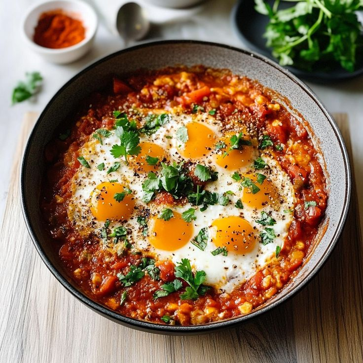

Shakshuka
Shakshuka is a popular dish across North Africa and the Middle East. It features eggs poached in a flavorful sauce of tomatoes, chili peppers, and onions, often spiced with cumin and paprika.
Ingredients
- 4 large eggs
- 1 can (400g) crushed tomatoes
- 1 onion, chopped
- 1 red bell pepper, sliced
- 2 cloves garlic, minced
- Spices: 1 tsp cumin, 1 tsp paprika, pinch of cayenne
- 2 tbsp olive oil
- Fresh parsley or cilantro for garnish
Instructions
Show cooking steps
- Heat olive oil in a large skillet over medium heat. Add onion and bell pepper and cook until soft.
- Add garlic and spices, and cook for another minute until fragrant.
- Pour in the crushed tomatoes. Simmer for 10-15 minutes until the sauce has thickened.
- Using a spoon, make four small wells in the sauce. Crack an egg into each well.
- Cover the skillet and cook for 5-8 minutes, or until the egg whites are set but the yolks are still runny.
- Garnish with fresh herbs and serve immediately with crusty bread.
Video Tutorial
Country of Origin
Shakshuka is believed to have originated in Tunisia and is a staple in many North African countries.